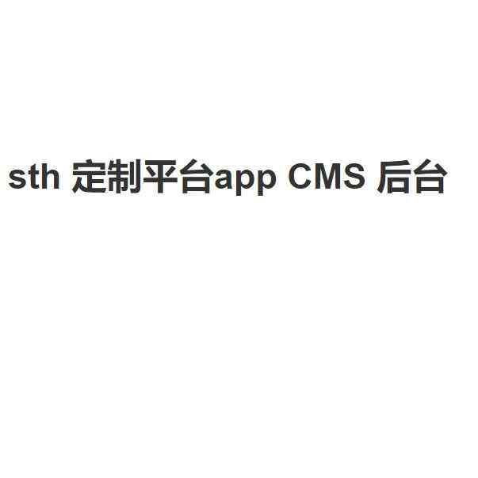

互联网产品展示
语音笔记本APP设计PRD
by Liu / Web Design / 2019 1 16帮助用户解放双手和双眼，用语音输入与带有文字的图片记录文字，标签功能快速记录与获取信息。
Read More制衣平台APP-产品原型设计
by Liu / Web Design / 2018 12 25在团队协作下，使用AXURE制作了本次产品的原型设计，其中大量使用了游戏化思维增加用户黏着度。
Read More

制衣平台APP-CMS后台原型设计
by Liu / Web Design / 2018 12 25在团队协作下，使用AXURE制作了本次产品的CMS后台的原型设计，为产品的上线与下线提高效率。
Read More